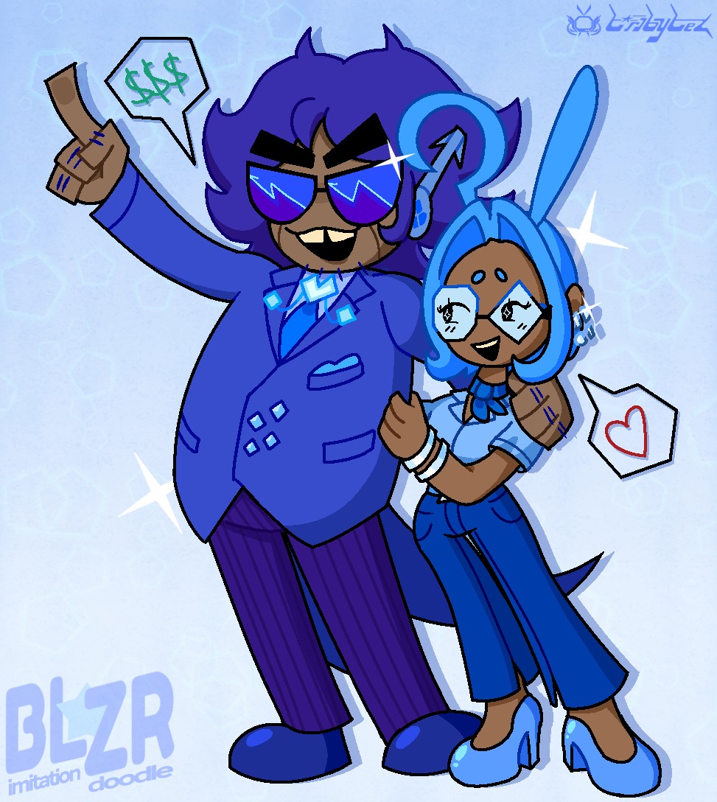
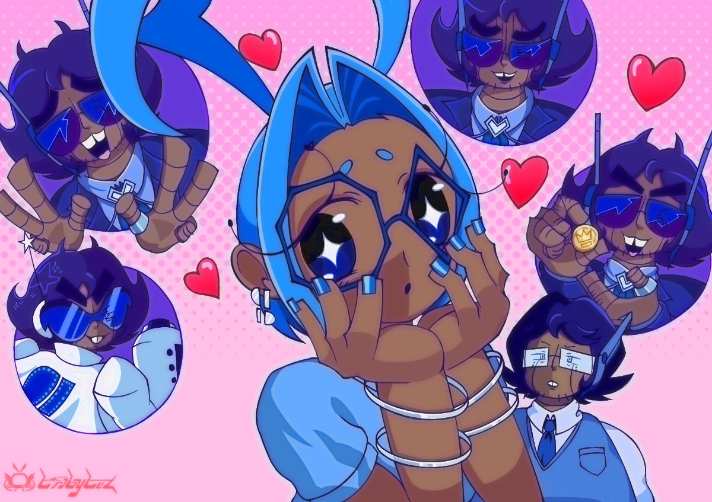
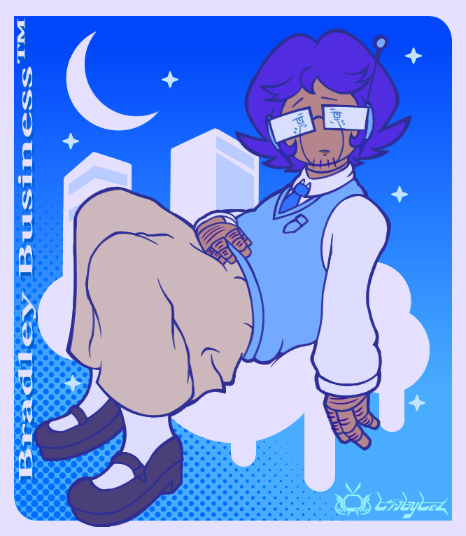

Summary

Hello, and welcome to my digital shrine where I talk about my wife, husband, CEO, fictional other:
Bradley "Blue Executive" Business. As you can see, I am madly in love with them, the primary antagonist of the Roblox game Super Doomspire.
As the 27-year-old current ruler of Cerulea (the southeastern blue-colored urbanized region in
this map) and leader of the capitalistic Blue Team, Blue Exec plays the role of the snobbishly flamboyant, but immature, CEO of Cerulea's most prominent company.
Unsurprisingly, due to their materialism, narcissism, and overly luxurious living situation, these factors corrupted their psyche to the point of their dwindling reputation amongst other teams.
Thanks to these issues, they're often a recluse and thus alone. If Blue was a real person, I'd provide them with love. But alas, they're just a fictional character, and therefore doesn't exist in reality. But I'll be there for them, regardless.
Lore
NOTE: Some elements of this story are based off of my own memory, headcanons, semi-outdated lore, and trivia from the SDS devs.
Blue is well-adapted in business culture ever since infancy, when they were discovered at a doorstep by the then-proletarian Board of Investors. Throughout most of their early years, they practiced signing contracts with crayons and was raised in a mail room. So Blue originally dreamt of being a mailman, but the Board had other plans up their sleeves...
As the exec grew older year by year, the more distant and overbearing the Board became, and Cerulea's economy began to slowly deplete. Unbeknownst to Blue, they would be the solution to Cerulea's economic downturn.

It took a while before the employees and the Board raised awareness over such an event, thus led to Blue's eventual tenure. However, a simple promotion wasn't enough. It wouldn't be until an anonymous individual notified the Board about a "Doomscroll", a magical wish-granting artifact taking the form of a contract. To say the Board was elated would be an understatement.

In celebration of Blue's tenure, the Board visited their office with this special gift, much to the exec's childish delight. Finally! The solution was in their hands, and all with a signature their wishes could come true.

"Make my city powerful again!" they declare with childish fervor. And Cerulea has been growing wealthier and wealthier ever since... but at the cost of a destructive event known as the Doomspire Conflicts, which brought forth a then-unfound sport involving land acquisition thanks to Doomspires.
Despite this newfound achievement, Blue is not the most competent CEO. In fact, they have an unhealthy habit of exhausting their company's funds for self-pleasure, when it could become a conglomerate. Not to mention this, because of their pampered environment and spoiled nature, they're cowardly and immature.
About Us
Bradley "Blue Executive" Business.... My dear wife, my babygirl, my Dark Prince of the Shadowed City. Oh how I love them.. I love their dorkiness combined with the nouveau riche demeanor. I was enamored by their presence on November 10, 2021 thanks to Super Doomspire.
Background
Prior to me actually playing the game, I was pretty aware of its existence as far back as 2019 (unfortunately) thanks to KonekoKitten (a now-disgraced YouTuber). However, given my tastes at the time, I didn't really care much for it.
That is until Halloween 2021, when I got into SDS for the first time. I forgot what prompted me to actually play it (might've been friend activity or recommendations), but I ended up becoming addicted to it and joined the community for a few years.
Before Bradley, there was a different character: Red Leader (no, not the Eddsworld character). She was my initial favorite leader out of the others because I saw her as a "girlboss" type of character, so she became the subject of my first ever SDS fanart.
So apparently according to the original filename, I've made that on November 12, 2021, two days after drawing Blue...

Then came them. I don't even know what actually prompted my brain to go gung-ho head-over-heels for Blue, but they've haunted my mind ever since that special day. I've even made a special self-insert character named Azure Reporter, who was brought onto the cyberspace in December 4, 2021. It also doesn't help that as I learned about their lore and jotted up headcanons, my relationship with Bradley became closer, to the point of waifuism / yumeshipping. Given that this all took place during my stay in the SDS fandom, I've centered a majority of my personality around Bradley, for better and for worse, but mostly worse.
There was a brief period around late 2023 - mid 2024 in which I cut back from SDS due to my own dwindling reputation, as well as many personal issues. As I've further distanced myself and became older, Blue Exec just heavily resonated with me, such as coping with loneliness and having to rely on parental support (especially in this day and age). Even Bradley themself is implied to be irresponsible with their occupation, as well as being a somewhat immature and narcissistic recluse, all of which I can relate to (albeit unemployed), hence why I relapsed back into yumeshipping with Bradley. It genuinely felt I was truly meant for them.

I love you, Bradley. My sweet prince
Their Source

Super Doomspire is a 2019 fighting game on Roblox created by doomsquires (Polyhex and blutreefrog) based on the Doomspire Brickbattle fighting subgenre.
Doomspire Brickbattles?
Doomspire Brickbattles are a type of subgenre within the Roblox platform in which players from four colored teams (red, yellow, green, and blue) are tasked with taking out all the spawn points from the three opposing towers (called Doomspires). These games dated as far back as the mid-2000s, with superbloxman52 (now Hiding_Out)'s Classic Brickbattle - Doomspire being thought of as one of the first of its kind. The Doomspire model itself was created in November 2, 2006 by Leeav.
The genre gained a resurgence during the late 2010s, primarily thanks to Doomspire Brickbattle from Temple of Brickbattle and the aforementioned SDS. SDS, however, is mostly inspired from the ToB version.
Gameplay
The gameplay is similar to Doomspire Brickbattle, but with improved QoL, various maps, visual changes, and additional features, such as multiple game modes, the ability to use Stickers, and some hidden lore if you're deeply into that. (Fun fact: Stickers could be sent in the chat prior to around early - mid 2022, but due to Roblox updates, this no longer works.)
So far, there are five game modes.
- Classic and Two Teams
The two most common gamemodes, basically your average Doomspire Brickbattle.
- Deathmatch
Two teams must compete to get 25 total kills, or the most kills if the timer runs out. Unlike Classic and Two Teams, players do not fight on Doomspires.
- Roundcat Rally
The goal is to knock down the enemy team's Roundcats, which are shielded with durable brick walls. The only weapons available are Swords, Launchers, and Trowels. It happens to be unpopular within the community.
- Infection
There are only two teams: Red and Green. If players spawn as Red, they play the roles of survivors, and they must defend themselves from Green players (known canonically as "the Infected").
Survivors spawn with all weapons; the Infected, on the other hand, are at a great disadvantage, only allowed to use a Sword and Superball, as well as being greatly weakened, though they're faster and jump higher than survivors
But three modes remain either scrapped, or removed as of 2020.
- Spawn Capture (private servers only; removed as of 2020)
Exactly What It Says On The Tin.
- Blow Stuff Up (private servers only; removed as of 2020)
The goal is to destroy parts rather than spawns.
- Titans (scrapped)
A scrapped game mode in which players must protect their Titan from a flood, forcing players to seek higher ground. Each Titan has 400 HP.
Soundtrack
The BGMs were composed by SkyTheFloof and Zamual, while blutreefrog composed the older pre-2021 tracks. The OST is available here.
Lore
As stated before, this game has some hidden lore, all depicted in a "show don't tell" approach, allowing for players' interpretations. This can be seen with some of the Stickers, the Izumi map, and now-offsale UGC.

The teams are represented by Red Leader, Yellow King, Green Scientist, and Blue Executive.
Is SDS worth playing in [CURRENT YEAR]?
No, unless you either wanna go on a nostalgia trip, or have a friend who's extremely familiar with the game. It doesn't help that the game itself is no longer being updated as of summer 2022 due to a mix of dwindling popularity, Roblox updates breaking the archaic scripting over time, and the developers wanting to distance themselves from PVP games and the toxicity these types of games facilitate. Despite all these issues, SDS does still garner a few hundred players from time to time.
Factoids + Fanon
Here is where I discuss common trivia and fandomized portrayals of Blue that I've noticed while I was in the SDS community.
Factoids
- For a short time, Blue Executive's canon full name was "Bradley Business". This was quickly retconned as of May 2022, but they're still Bradley Business in my heart.
- Their home stage is Rooftop.
- Blue's weapon of choice is the Embezzler, an unholy coffee-powered amalgamation of office equipment taking the form of a launcher.
- Their design is most likely based on Ludwig van Koopa; the hair and tooth gap are dead giveaways.
- They're described as "a coward with lots of money."
- Blue's age being 27 is a reference to Patrick Bateman from American Psycho.
- They will do anything for money, that includes monetizing water and endangering lives and the environment.
- At least prior to Blue's adulthood, Blue Team as a whole was responsible for causing an ecological collapse on Green Scientist's land.
- Blue's favorite food are TV dinners.
- They also enjoy Lady Gaga.
- As stated in the 'Lore' tab, Blue originally wanted to be mailman before being made executive against their will.
Common Fanon
- Due to Blue's reclusiveness and unhealthy habits, it's uncommon to portray Blue as chubby.
- They're also depicted with a pet and/or partner sometimes, either fictional like Miku Hatsune or a whole new original character entirely. When it comes to pets, expect them to have a cat.
- If we're speaking in TV Tropes terms, then Blue would be considered a "woobie", more specifically, "a woobie, destroyer of worlds."
- In fact, out of all the leaders, Blue is the token punching bag.
- Jokes about their appearance are common, such as being compared to the aforementioned Ludwig and some animals such as naked mole rats and beavers.
- Blue is commonly mistakenly drawn with bucked teeth rather than a tooth gap. I was guilty of this as well.
- They are also achillean (gay/MLM/NBLM umbrella term) most of the time.
My Fanon

- Even though Blue's pronouns are canonically he/him, I see them as being fine with any pronouns, mostly she/they.
- In fact, Blue Executive is merely her celebrity/leader persona. Her actual name is Bradley Business and she dislikes her job, despite loving the luxury.
- She's an amnesiac android modified by Book.
- Speaking of Book, out of all of the Investors, she's mostly "inherited" from him. I've inspired this headcanon from one of Octalien's drawings, as well as Book's and Bradley's sunglasses sharing the same colors.
- Her only friend is Azure Reporter (real name: Abbie Agate), a plucky idol news reporter dedicated to uncovering Cerulea's darkest secrets.
"Endstage Cerulea?"
You may see me post certain SDS-related artwork on my socials with this specific tag. "Endstage Cerulea" (full title: "Super Doomspire Side Story: Endstage Cerulea") is my fanonized bastardization of SDS, but it focuses more on the perspective of Blue Team in the eponymous setting. Cerulea in this version is a labyrinthine satirization of late-stage capitalism, hence the older 2022 title "Late-Stage Cerulea" (yes this has been in my mind for that long, you can read the outdated concept doc here).
Basic Synopsis
An energetic news reporter and a reluctant executive join forces in order to discover the truth and secrets of Cerulea, all while meeting friends and foes. Meanwhile, a conspiracy is brewing behind closed doors.
What about it?
I want to create a webcomic based on this concept, but it'd be pretty overwhelming for me, as I don't really read a lot of comics or manga. So why not start off easy by regularly drawing what's based on my mind? I'd love to create mini-comics or a small zine someday, though. :]
Artwork
I post most of my Blue-centric art here, including the Investors and Azure Reporter (my self-insert).
I'll even put up some fanart/commissioned works as well!
Blue Exec
2025
2024
2023
2022
2021
Azure Reporter (includes Bluezure)
2025
2024
2023
2022
2021
The Board of Investors
ft. "Queen", another OC who's Azure's biological mother.
2023
2022
Misc.
2025
2021